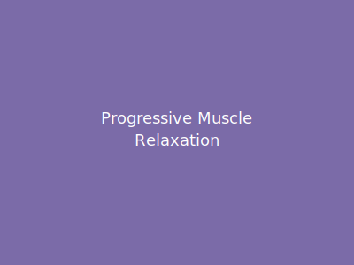

Progressive Muscle Relaxation

Progressive Muscle Relaxation (PMR) is a technique that involves tensing and then releasing different muscle groups to increase awareness of physical tension and promote deep relaxation. It helps release stored tension throughout your body.
Instructions:
- Find a comfortable position, sitting or lying down.
- Start with your feet: tense the muscles for 5 seconds, then release for 30 seconds.
- Move up to your calves, thighs, abdomen, chest, arms, hands, neck, and face.
- For each group: tense for 5 seconds, notice the tension, then release and feel the relaxation.
- Breathe naturally throughout the exercise.
Tips:
- Don't strain—tense only to the point of noticing tension.
- Focus on the contrast between tension and release.
- Practice in a quiet environment free from distractions.
Cautions:
- Avoid tensing muscles if you have injuries or chronic pain in that area.
- If you have heart problems or muscle conditions, consult your doctor first.
Back to Exercises